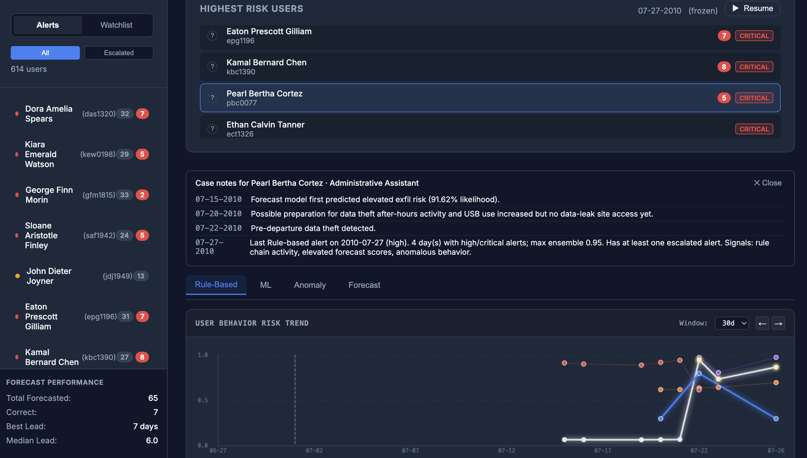

Research/
Evaluating whether AI systems are equipped to make the decisions they appear to make.
I treat trust as an engineering property. If a system cannot show its source material, reveal its limits, and improve against a baseline, I do not give it much credit for sounding confident.
scientific-codebase-rag.md
Scientific software creates a retrieval problem that ordinary code search handles poorly. A user might ask in mathematical language while the answer lives in implementation details that never use the same vocabulary.
Confident-sounding agents are expensive when they're wrong. The goal is a retrieval layer that forces accountability — the agent answers from what it can actually verify, or it doesn't answer at all.
For developers and researchers using AI coding assistants, it's a grounding layer — every generated output has to survive retrieval checks before it ships.
The second project is built for everyone else. Scientific computing has always been a closed room — you either already spoke the language or you didn't get in. This opens the door.
insider-threat-capstone.md
My MSD capstone. Insiders are hard to catch because they belong there — the activity looks normal until it doesn't, and by then it's usually too late.
The system combines four detectors — a classifier, a forecasting model, deterministic rules, and an anomaly baseline normalized to each user's own behavior. No single signal was reliable alone. The ensemble was the point.

Building it was where ML stopped being theoretical — and where I started caring about what it means for a system to actually be trustworthy. That's what pushed me toward verifiable systems and putting LLMs to work on real problems.